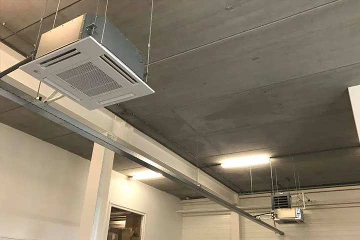

Airconditioning
Splitsystemen voor woonhuizen, kantoren en winkels. Een binnenunit koelt of verwarmt de ruimte, de buitenunit staat op het dak of aan de gevel. Wij kiezen samen met u het model dat bij de ruimte past: aan de wand, onder of in het plafond, of weggewerkt met alleen roosters in zicht.
Meer over airconditioning